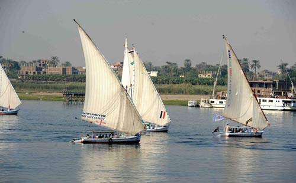
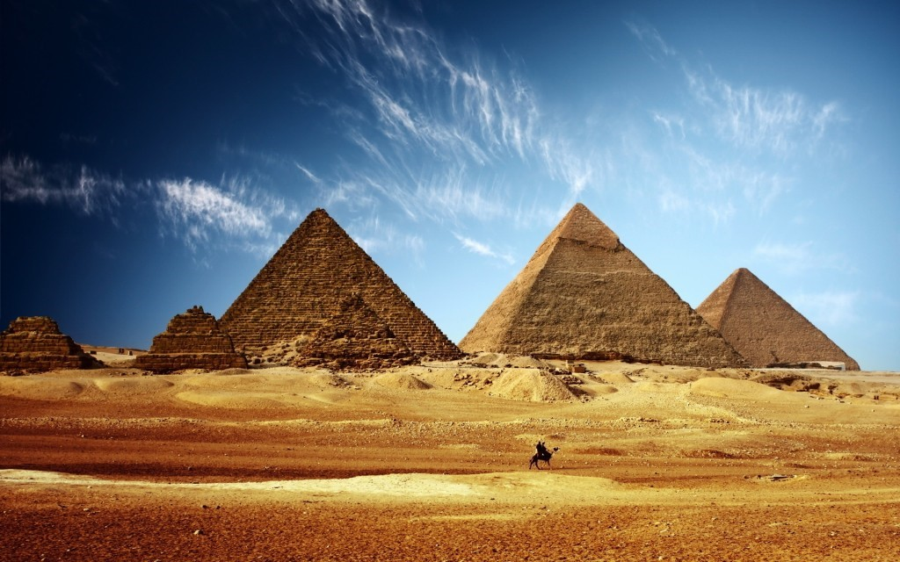
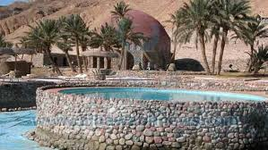
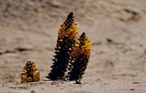

هي نمط من أنماط سياحة الطبيعة وخلالها يستمتع السائح بالمشى أو ركوب القوارب فى المناطق الطبيعية مع مرشدين لشرح مظاهر البيئة الطبيعية من النبات والحيوان وتتمثل فى المحميات الطبيعية ذات الشهرة العالمية مثل: محميات رأس محمد ، سانت كاترين ، نبق فى جنوب سيناء . كما تتميز البيئة فى سفاجا على البحر الأحمر بعوامل جذب خاصة تتجاوز حدود المناظر الطبيعية الخلابة وجمال البحر والجبال والصحراء وسوف يشهد ميلاد مشروع تحويل الحياة البحرية بمياه البحر الاحمر الى محمية طبيعية بساحله الطويل الذى يمتد لاكثر من الف كيلو متر وسوف يكون ثانى اكبر محمية بحرية بيئية فى العالم . المحميات الطبيعية : المحمية الطبيعية هى مساحة من الأراضي أو المياه الساحلية أو الداخلية تتميز بوجود كائنات حية أو نباتية أو حيوانية أو أسماك أو ظواهر طبيعية ذات قيمة ثقافية أو علمية أو سياحية أو جمالية . وتستهدف المحميات الطبيعية صون الموارد الطبيعية الحية والحفاظ علي صحة العمليات البيئية في النظام البيئي والمحافظة علي التنوع البيولوجي الوراثي في مجموعات الكائنات الحية التي تتفاعل في إطار النظام البيئي . وحفاظا علي الموارد الطبيعية والتنوع البيولوجي صدر قانون في شأن المحميات الطبيعية حيث ينص علي حظر القيام بأعمال أو تصرفات أو أنشطة من شأنها تدمير أو إتلاف أو تدهور البيئة الطبيعية أو الإضرار بالحياة البرية أو البحرية الحيوانية أو النباتية أو المساس بمستواها الجمالي بمناطق المحميات . وفي إطار القانون فقد تم إعلان 21 محمية علي مساحة 8.5 % من مساحة مصر وهي تمثل العديد من النظم البيئية المتميزة والظواهر الطبيعية وغيرها . كما تم تحديد 19 منطقة لاعلانها محميات طبيعية في المستقبل ويهدف الوصول إلي حماية 15% من مساحة مصر بحلول عام 2017 .
اشتهرت مصر بمدنها ومياهها المعدنية والكبريتية وجوها الجاف الخالى من الرطوبة وماتحتويه تربتها من رمال وطمى صالح لعلاج الأمراض العديدة ، وتـعدد شواطئها ومياه بحارها بما لها من خواص طبيعية مميزة . وقد انتشرت فى مصر العيون الكبريتية والمعدنية التى تمتاز بتركيبها الكيميائى الفريد . والذى يفوق فى نسبته جميع العيون الكبريتية والمعدنية فى العالم . علاوة على توافر الطمى فى برك هذه العيون الكبريتية بما له من خواص علاجية تشفى العديد من امراض العظام وامراض الجهاز الهضمى والجهاز التنفسى والامراض الجلدية وغيرها ، كما ثبت ايضا الاستشفاء لمرضى الروماتيزم المفصلى عن طريق الدفن فى الرمال . كما اكدت الأبحاث أن مياه البحر الاحمر بمحتواها الكيميائى ووجود الشعاب المرجانية فيها تساعد على الاستشفاء من مرض الصدفية . وتتعدد المناطق السياحية التى تتمتع بميزة السياحة العلاجية فى مصر وهى مناطق ذات شهرة تاريخية عريقة مثل : حلوان ، عين الصيرة ، العين السخنة ، الغردقة ، الفيوم ، منطقة الواحات ، اسوان ، سيناء ، واخيراً مدينة سفاجا الرابضة على شاطىء البحر الاحمر والتى تمتلك جميع عناصر السياحة العلاجية والتى تزورها الأفواج السياحية وتأتى شهرتها بأن الرمال السوداء لها القدرة على التخلص من بعض الأمراض الجلدية . وقد اعتقد المصريون القدماء أن الانسان سوف يبعث ثانية بعد موته ليحيا حياة الخلود ولذا حرصوا على الاحتفاظ بأجساد الموتى عن طريق تحنيطها , والتحنيط عملية يقصد بها قدماء المصريين , كما راعوا دفن جثث الموتى بعيداً عن رشح المياه ووضعوها فى قبور حصينة فى الاماكن الجافة فى الصحراء وفى داخل الاهرامات , وكانت هذه العمليات تتم فى ظل علوم طبية متقدمة واطباء أكفاء قادرين على استخدام كل ما تجود به الطبيعة من مواد صيدلية وكيمائية . الساحة العلاجية فى مصر وقبل مولد المسيح بثلاثة آلاف عام انجبت مصر " ايمحوتب " عميد الطب العالمى ورائده الأول باجماع المؤرخين . ويعنى أسمه الهيروغليفى الذى يأتى فى سلام " أنه الطبيب المعمارى الوزير كبير الكهنة المرتلين , وفوق ذلك كله رافع أول صرح حجرى فى التاريخ : هرم الملك " زوسر " المدرج بسقارة . ويوم كانت الانسانية بعد فى طفولتها الأولى أهدتها مصر فى " أيمحوتب " عبقرية طبية , ويقول عنه " جيمس هنرى برستد " وكورت زيته " أنه المخترع الأول لفن الطب بلا منافس . عبد فى منف كإله للشفاء . وقال فيه " أوسلى " : أنه أول صورة لطبيب واقعى , واصبح إلهاً شعبياً محبوباً . وبتزايد الكشوف الأثرية التى تركها على مر الزمن بزغت الأهمية الطبية والعلاجية للعديد من المواقع فى أرجاء مصر مثل حلوان والفيوم وجنوب سيناء وسفاجا لما تتمتع به هذه الاماكن من مياه معدنية ورمال وكثبان قادرة على علاج وشفاء العديد من الامراض المستعصية فى عالمنا اليوم مثل الامراض الجلدية والروماتزمية . ولقد أدركت الدولة الأهمية الطبية والعلاجية لهذه الأماكن فقامت على رعايتها والاهتمام بها حيث صارت من أرقى أماكن الاستشفاء العالمية . وهكذا أحتلت مصر موقعاً متميزاً على خريطة السياحة العلاجية واصبحت مقصداً لراغبى الاستشفاء من جميع انحاء العالم حيث يأتى اليها السائحون للأستمتاع بالمناخ الصحى والعلاج الطبى الطبيعى تحت رعاية أطباء متخصصين فى جميع الفروع والمستشفيات الحديثة التى يتوافر بها أحدث الاجهزة العالمية يساندهم أخصائيون فى التمرين والعلاج الطبيعى على أعلى مستوى من الخدمة .الى جانب تقديم برامج سياحية متنوعة لزيارة الاماكن السيحية الفريدة فى مصر. الاستشفاء الطبيعى بمصر: تنتشر فى مصر مئات من العيون والآبار الطبيعية ذات المياه المعدنية والكبريتية , تختلف فى العمق والسعة ودرجة الحرارة بين 30 , 73 درجة مئوية. وقد أثبتت التحليلات المعملية احتواء الكثير من هذه الينابيع الطبيعية على أعلى نسبة من عنصر الكبريت مقارنة بالأبار المنتشرة فى شتى أنحاء العالم كما تحتوى هذه المياه الطبيعية على عدة أملاح معدنية وبعض المعادن ذات القيمة العلاجية من أمثال كربونات الصوديوم ونسب متفاوتة من بعض العناصر الفلزية مثل الماغنسيوم والحديد . السياحة العلاجية كما أظهرت القياسات المعملية ملاءمة نسبة الملوحة فى هذه الموارد المائية الطبيعية للأغراض الاستشفائية ويضاف الى ذلك انتشار آبار المياه الطبيعية النقية الصالحة للشرب , والتى توسعت مصر فى استثمارها وإنتاجها على نحو إقتصادى فى السنوات الأخيرة فى إطار رقابة علمية صارمة على الجودة والمواصفات القياسية من حيث النقاء من الشوائب والطفيليات والجراثيم , ودرجة عسر الماء والتركيب الكيميائى , مما دفع بالعديد من الشركات الوطنية والأجنبية الكبرى الى التنافس للاستثمار فى هذا المجال . ولم تكن رمال مصر أقل ثراء من مياها فقد أظهرت الدراسات احتواء الكثبان الرملية بالصحراء المصرية على نسب مأمونة وعظيمة الفائدة من العناصر المشعة , وقد أدى العلاج بطمر الجسم أو الوضع المؤلم منه بالرمال لفترات مدروسة ومحددة الى نتائج غير مسبوقة فى عدة أمراض روماتزمية مثل مرض الروماتويد والآلام الناجمة عن أمراض العمود الفقرى وغير ذلك من اسباب الألم الحاد والمزمن , مما يحار فيه الطب الحديث.
تعد السياحة الثقافية والأثرية من أهم وأقدم أنواع السياحة فى مصر إذ أن مصر بها العديد من الآثار الفرعونية واليونانية والرومانية واللقبطية والاسلامية ، هذا بالإضافة إلى المتاحف المتنوعة ، وقد نشأت السياحة الثقافية منذ اكتشاف الآثار المصرية القديمة وفك رموز الحروف الهيروغليفية وحتى الآن لا تنقطع بعثات الآثار والرحالة السائحين ومؤلفى الكتب السياحية عن مصر وقد صدرت مئات الكتب بلغات مختلفة وكانت وسيلة لجذب السياح من كل انحاء العالم لمشاهدة مصر وآثارها وحضاراتها القديمة من خلال متاحفها القومية والفنية والأثرية . أهم المناطق الأثرية السياحية بالقاهرة والجيزة : سد الكفارة : ويقع فى وادى مرارى جنوب حلوان . مدينة أون : وهى من أهم المناطق الاثرية الفرعونية وتعرف باسم عين شمس أو هليو بوليس وتعتبر من أقدم العواصم فى العالم القديم ومن أهم معالمها الآثرية مسلة الملك سنوسرت الأول "مسلة المطرية" وهى الآثر الوحيد الباقى من معالم هذه المدينة . منطقة الاهرامات : تعتبر الأهرام الثلاثة خوفو وخفرع ومنقرع إحدى عجائب الدنيا السبع كما إنها تعتبر إنجازا هندسيا معماريا فريدا تشهد على شموخ وعظمة مصر ويقف لحراستها تمثال أبو الهول وهو تمثال ضخم يتكون من جسم أسد ووجه إنسان . منطقة سقارة : أقيم فيها أول بنيان حجرى فى العالم وهو هرم سقارة المدرج الذى بناه الملك زوسر عام 2816 ق م . منطقة دهشور : من أهم المناطق الأثرية فى مصر وهى تضم أهم الكنوز الأثرية حيث عثر بها على أكثر من اكتشاف أثرى من الذهب داخل أهراماتها ومقابرها ، وأهم هذه الأهرامات هرم سنفرو ويعرف باسم الهرم الأصفر الهرم المنحنى الخاص بالملك سنفرو ، والهرم الأسود للملك امنمحات الثالث ، وهرم الملك سنوسرت الثالث وقد بدأت هذه المنطقة فى استقبال السياحة العالمية بعد اعدادها لذلك .
تعد السياحة الترفيهية أحد أهم أنواع الأنشطة السياحية التي توجد في مصر والتي تجتذب عددا كبيرا من السائحين من مختلف دول العالم , لما تتمتع به مصر من شواطىء خلابة على البحرين الابيض والاحمر وتمتد لنحو 3000كم . ومن أهم المناطق التى يمكن زيارتها لممارسة هذه السياحة هى:- منطقة البحر الأحمر حيث يمتاز البحر بمياهه الصافية وشعابه المرجانيه الملونة وأسماكه النادرة وجباله المتباينة الممتدة فى سلسلة طويلة بمحاذاة البحر ليس بينها وبينه إلا سهل يصلح فى معظم ارجائه لإقامة المخيمات وتتمتع سواحل خليج العقبة بتسهيلات كثيرة لممارسة رياضات الغوص والغطس وغيرها من الرياضات البحرية . منطقة الساحل الشمالى يتميز الساحل الشمالى بكثرة القرى السياحية الجديدة والتى تمتد على طول ساحله ومن أهم هذه القرى : قرية مراقيا ، قرية مارينا ،مركز مارينا، مدينة الأحلام ، قرية ريفيرا ، قرية اللؤلؤة وغيرها . سيناء تمتاز سيناء بمناظرها الطبيعية الساحرة من هضاب وجبال وشواطئ طويلة وممتدة على خليج السويس والعقبة وشرم الشيخ، والغردقة، ودهب، ونويبع، ورأس سدر حيث نقاء وصفاء المياه ، هذا بالإضافة إلى ما تتمتع به من الشعاب المرجانية ذات الألوان المتعددة والأسماك الملونة النادرة , مما يتيح للسائح الإستجمام على الشواطئ وممارسة الرياضات المختلفة منها رياضة الغوص وصيد الأسماك على مدار العام نظراً لما تتمتع به مياه خليج العقبة من الدفئ طوال العام هذا إلى جانب توفر شبكة من الطرق والمدقات تصلح لسباق الدراجات وسباقات الهجن بالإضافة إلى تسلق الجبال , وتتوفر بجنوب سيناء البنية الأساسية اللازمة لمثل هذا النوع من السياحة , كما يوجد بها العديد من القرى والفنادق السياحية والمخيمات التي تتناسب وجميع الدخول. العريش يشتهر شاطئ العريش بإسم " شاطئ النخيل" نظراً لوجود غابات أشجار النخيل على إمتداد الشاطئ حيث يصل طول شاطئ العريش إلى نحو 10كم ، والذى تتوافر فيه جميع الخدمات السياحية وتطل عليه الشاليهات وعدد من المشروعات الفندقية والسياحية . كذلك تنتشر منتجعات السياحة الترفيهية على خليج السويس، وخليج العقبة وساحل البحر الابيض المتوسط . نهر النيل السياحة النيلية الترفيهية تبدأً هذه السياحة من الرحلات السريعة بالمراكب الصغيرة , مروراً برحلات البواخر النيلية , وانتهاءً بالفنادق العائمة . - وتكتسب الرحلات النيلية شعبية متزايدة لدى السائحين , ويعج نهر النيل حاليا بما لا يقل عن 230 سفينة سياحية. أما المسار التقليدي للسفن السياحية النيلية، فهو من الاقصر إلى أسوان ثم إلى الاقصر مرة أخرى. وفي مرسى السفن على ضفاف النهر، حيث ترسو السفن أحيانا على مسافات بعيدة من الاماكن المخصصة لنزول الركاب.